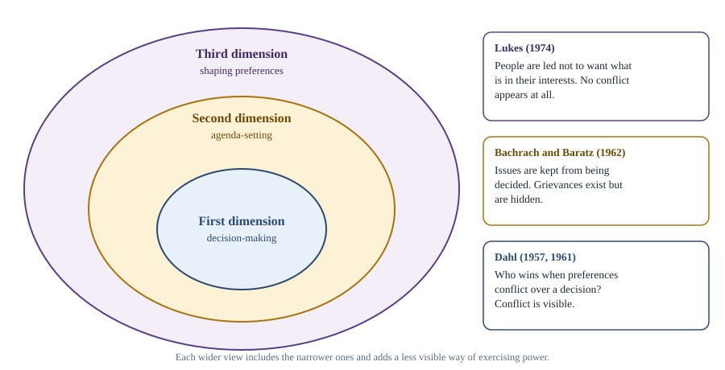
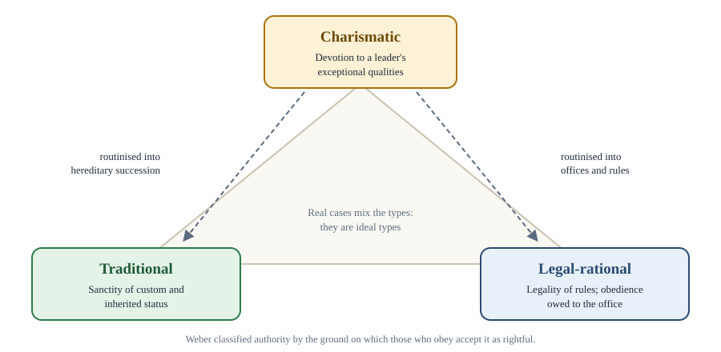

Chapter 3: Power, Authority and Legitimacy¶
Who gets their way, who has the right to rule, and why we obey
Learning outcomes
When you have finished this chapter you should be able to:
- define power and distinguish it from influence, force, authority and legitimacy;
- explain the three dimensions of power (Dahl, Bachrach and Baratz, Lukes) and apply them to a case;
- outline the ideas of power of Gramsci, Arendt and Foucault;
- describe Weber's three types of authority and the distinction between being in authority and an authority;
- compare sociological and normative ideas of legitimacy, including Beetham's three criteria;
- evaluate the main theories of political obligation and the case for and against civil disobedience.
3.1 Three questions¶
A traffic police officer signals you to stop, and you stop. Why? Perhaps because you fear a fine (the officer has power over you). Perhaps because you accept that police officers have the right to direct traffic (the officer has authority). And perhaps because you believe the whole system of traffic law is rightly made and serves a good purpose (the system has legitimacy). These three ideas are closely related but different, and political theory has spent much effort separating them.
| Concept | Rough meaning | Example |
|---|---|---|
| Power | The capacity to bring about outcomes, especially to make others act as one wishes | An employer can make workers stay late by threatening dismissal |
| Influence | The ability to affect others' choices by persuasion, example or reputation, without threats | A respected scientist changes public opinion on vaccines |
| Force | Physical compulsion, or the threat of it | A guard physically removes a protester |
| Authority | Power that is recognised as rightful by those subject to it; the right to command | A judge's sentence is obeyed because judges are entitled to sentence |
| Legitimacy | The quality of a regime or rule that makes it rightful and worthy of support | A government chosen in free elections under a fair constitution |
Table 3.1. Power and related concepts.
A useful slogan is that authority is legitimate power. But the slogan hides a difficulty: does "legitimate" mean that people believe the power is rightful, or that it really is rightful? This chapter returns to that question in section 3.5.
3.2 What is power?¶
Power is perhaps the most central concept in political science, and also one of the most disputed. In the most general sense, power is the capacity to produce effects. In politics we are mainly interested in power over others: the capacity of some people to get others to do what they would not otherwise do. Some theorists, especially feminists, also stress power to: the capacity to act, often together with others, as when a community gains the power to run its own school.
The first dimension: decision-making¶
The American political scientist Robert Dahl gave an influential definition in 1957: A has power over B to the extent that A can get B to do something that B would not otherwise do. To find out who has power in a community, Dahl argued, we should study observable conflicts over key decisions and see whose preferences prevail. In Who Governs? (1961), a study of the city of New Haven in the United States, he found that different groups won on different issues (urban renewal, education, party nominations), and concluded that power was dispersed rather than held by a single elite. This is the pluralist view of power.
The second dimension: agenda-setting¶
In 1962 Peter Bachrach and Morton Baratz published "Two Faces of Power". They argued that Dahl had seen only one face. Power is also exercised when A shapes the political agenda so that issues threatening A's interests are never raised for decision at all. They called this non-decision-making. A council that never discusses pollution from the town's largest factory, because everyone knows the owner would object and the matter would go nowhere, displays power even though no visible conflict occurs.
The third dimension: shaping wants¶
In Power: A Radical View (1974) Steven Lukes added a third dimension. The most effective power, he argued, is the power to shape people's very preferences and beliefs, so that they do not even want what would be in their interests. If workers come to believe that their low wages are natural and deserved, or members of a subordinate group accept a doctrine that justifies their subordination, there is no conflict at all, observable or hidden, yet power is at work. Lukes defined power as A affecting B in a manner contrary to B's interests.

Caution: the difficulty of 'real interests'
Lukes's third dimension is powerful but contested. To say that people are mistaken about their own interests, we need some standard of what their real interests are, and critics ask who is entitled to decide this. Lukes answered that real interests are what people would choose if they could make choices under conditions of relative autonomy, with full information. Even so, the claim must be made carefully, with evidence, and with respect for the views of the people concerned.
Worked example 3.1: Three dimensions in one town
Situation. A town has a large chemical plant that employs a third of the workforce and pollutes the river. Residents suffer health problems.
First dimension. A proposal to fine the plant comes before the council and is defeated after the company lobbies hard. We can see a conflict and who won.
Second dimension. No proposal is ever made, because council members know the company would threaten to close the plant. The issue never reaches a decision.
Third dimension. Residents do not regard pollution as a problem at all: local newspapers, schools and the company's sponsorship of festivals have spread the belief that the plant means prosperity and that health problems have other causes. There is no grievance to suppress.
The example shows why studying only visible decisions may underestimate power.
3.3 Other theories of power¶
Gramsci: hegemony¶
The Italian Marxist Antonio Gramsci (1891–1937), writing in prison under the fascist regime, asked why workers in Western Europe had not made the revolution Marx expected. His answer was hegemony: the ruling class rules not only by coercion (through the state, police and army) but by consent, winning the acceptance of subordinate groups through culture, religion, education, the media and common sense. Ideas that serve the interests of the dominant class come to seem natural to everyone. Changing society therefore requires a struggle over ideas within civil society, not only a seizure of the state.
Arendt: power as acting together¶
The political theorist Hannah Arendt (1906–1975) sharply distinguished power from violence. Power, she argued in On Violence (1970), corresponds to the human ability not just to act but to act in concert. It belongs to a group and exists only as long as the group stays together. Violence is instrumental: it can destroy power but never create it. A government that must rely on violence alone has already lost power. On this view a peaceful mass movement that brings down a regime displays power in its purest form.
Foucault: power everywhere¶
The French philosopher Michel Foucault (1926–1984) argued that modern power is not mainly something held by a sovereign and exercised from the top down. It is diffused through institutions such as prisons, schools, hospitals, armies and factories, which discipline bodies and shape conduct through surveillance, timetables, examinations and the classification of people as normal or abnormal. In Discipline and Punish (1975) he took as a symbol Jeremy Bentham's design for a prison, the Panopticon, in which inmates can always be watched without knowing when, and so come to watch themselves. Foucault also linked power and knowledge: the human sciences, by defining what is normal, both depend on and produce power. Critics ask whether, if power is everywhere, it is still possible to distinguish just from unjust power, or to resist on principle.
| Thinker | Where power is found | What power mainly is |
|---|---|---|
| Dahl | Observable decisions | Getting others to do what they would not otherwise do |
| Bachrach and Baratz | Decisions and non-decisions | Also keeping issues off the agenda |
| Lukes | Decisions, agendas and preferences | Affecting others contrary to their interests, including by shaping wants |
| Gramsci | State and civil society | Coercion plus consent (hegemony) |
| Arendt | Groups acting together | The ability to act in concert; opposed to violence |
| Foucault | Everywhere, in institutions and knowledge | Disciplinary shaping of conduct |
Table 3.2. Theories of power compared.
3.4 Authority¶
Authority is the right to command and to be obeyed. Someone who has authority can expect compliance not because of the threat of force but because those subject to it accept that the command is rightful. Authority therefore economises on force: a state whose laws are accepted as authoritative needs far fewer police.
Weber's three types of authority¶
Max Weber, interested in why people accept domination, distinguished three ideal types of legitimate authority, by the ground on which it is accepted.
- Traditional authority rests on belief in the sanctity of long-standing customs and the status of those who rule by them: "it has always been so". Hereditary monarchs, tribal chiefs and patriarchal heads of families are examples. Its weakness is that it struggles to adapt to change.
- Charismatic authority rests on devotion to the exceptional personal qualities of a leader: heroism, holiness or extraordinary vision. Prophets, revolutionary leaders and the founders of movements are examples. It is unstable, since it depends on one person, and after the leader's death it must be routinised into traditional or legal forms.
- Legal-rational authority rests on belief in the legality of rules and the right of those appointed under them to issue commands. Obedience is owed to the office, not the person. Modern bureaucracies and constitutional governments are the leading examples. Weber saw it as the characteristic form of modern authority, efficient but potentially an "iron cage" of impersonal rules.

These are ideal types: real cases mix them. A constitutional monarch combines traditional and legal authority; a popular elected leader adds charisma to a legal office.
In authority and an authority¶
Philosophers distinguish two senses of authority.
- A person is in authority when they occupy a position in a system of rules that entitles them to command: a police officer, a judge, a minister. Their authority is de jure (by right under the rules).
- A person is an authority when their knowledge or expertise gives us reason to defer to their judgement: a doctor on medicine, a historian on the past. This is epistemic authority.
A third distinction is between de jure authority (the right to rule, according to some rules or principles) and de facto authority (actually being obeyed, and being widely believed to have the right). A government that has seized power in a coup may have de facto authority without de jure authority; a government in exile may claim de jure authority without being obeyed.
Key idea
Power is the capacity to get others to act as one wishes; authority is power accepted as rightful. Weber's three grounds of acceptance are tradition, charisma and legal rules.
3.5 Legitimacy¶
Legitimacy comes from the Latin legitimare, to declare lawful. In political theory it means the rightfulness of a political order, the quality that gives it a claim to obedience and support.
Sociological and normative legitimacy¶
There are two quite different ways of thinking about legitimacy.
- Sociological (or empirical) legitimacy, in Weber's tradition, is a matter of belief: a regime is legitimate to the extent that the people subject to it believe it rightful. This can be studied by surveys and observation. On this view even an unjust regime can be legitimate if people accept it.
- Normative legitimacy is a matter of justification: a regime is legitimate if it really does have the right to rule, according to sound moral principles, whatever people believe. On this view the question is not whether people accept the regime but whether they ought to.
Beetham's three criteria¶
The British political theorist David Beetham, in The Legitimation of Power (1991), criticised Weber for reducing legitimacy to belief. Power is legitimate, he argued, to the extent that three conditions hold:
- it is acquired and exercised according to established rules (legal validity);
- the rules can be justified by beliefs shared by both rulers and ruled, for example that authority should come from the people and serve the common interest;
- there is evidence of consent by the subordinate, through actions such as voting, swearing allegiance or signing agreements.
When the first fails, power is illegitimate; when the second fails, there is a "legitimacy deficit"; when the third fails, power is "delegitimated" (as when mass protests withdraw consent).
Sources of legitimacy¶
Different traditions have located the source of legitimacy in different places: divine will, tradition, the consent of the governed, democratic procedure, the protection of rights, good outcomes such as prosperity and security, or conformity to a constitution. Most modern democratic theory combines procedural legitimacy (power is acquired and exercised fairly, through free elections under the rule of law) with substantive legitimacy (power respects basic rights and serves the common good).
Legitimation crisis¶
The German philosopher Jürgen Habermas, in Legitimation Crisis (1973), argued that modern welfare states face a recurring problem. They must manage the economy and promise welfare, so they are blamed when the economy fails; but if they cannot meet rising expectations, citizens lose faith in the system. Whether or not one accepts Habermas's particular analysis, the idea that regimes can lose legitimacy through failure to deliver what they promise has been widely used.
Worked example 3.2: Assessing legitimacy
Situation. A military group overthrows an elected government, citing corruption. It promises elections within two years. Many citizens, tired of corruption, welcome the change; others protest and are arrested.
Analysis. By Beetham's first criterion, power was not acquired according to established rules: the constitution was overthrown. By the second, the justification offered (ending corruption) may be widely shared, but the rule that authority should come from the people is violated. By the third, consent is mixed: some welcome the coup, but arrests suggest consent is being forced. Sociologically, the regime may enjoy some legitimacy in the short run; normatively, most democratic theories would judge it illegitimate unless and until power is returned through fair procedures.
3.6 Political obligation¶
If a state is legitimate, do its citizens have a moral duty to obey its laws? The problem of political obligation asks why, and when, people ought to obey the law simply because it is the law, even when they disagree with it and could disobey without being caught. Several answers have been offered.
- Consent. We are obliged because we have agreed to obey. This is the social contract answer (Chapter 2). Its difficulty is that few people have ever consented expressly, and tacit consent, by staying in the country or voting, seems too weak, as Hume argued.
- Gratitude. We owe obedience to the state as we owe gratitude to parents, for the benefits it has given us. In Plato's dialogue Crito, Socrates refuses to escape from prison before his execution partly on this ground: the laws of Athens had raised and educated him. Critics reply that benefits we did not request do not create strict duties.
- Fair play. H. L. A. Hart (1955) and later Rawls argued that when people take part in a mutually beneficial cooperative scheme, accepting its benefits, they are obliged to do their share and not free-ride on others' compliance. Robert Nozick objected that benefits pressed on us without our choice cannot bind us: if neighbours set up a public address system and take turns entertaining the street, do I have to take my turn because I sometimes hear the music?
- Natural duty. Rawls also argued that we have a natural duty of justice to support and comply with just institutions that apply to us, whether or not we consented. The difficulty is to explain why the duty attaches to our state in particular.
- Utility. Utilitarians argue that general obedience to law produces better consequences than disobedience. This supports obedience in general, but seems to allow disobedience whenever breaking a particular law would produce better results.
- Philosophical anarchism. Some theorists, such as A. John Simmons and Robert Paul Wolff, conclude that none of these arguments succeeds, so that there is no general obligation to obey the law as such. This does not mean we should break laws: we usually have independent moral reasons not to steal or assault. It means that the fact that something is the law does not by itself create a duty.
3.7 Civil disobedience¶
Even where there is a general obligation to obey, there may be laws so unjust that disobedience is justified. Civil disobedience is a public, non-violent, conscientious breach of law, undertaken to bring about a change in laws or policies, by people who accept the legal penalty. Rawls, in A Theory of Justice, gave a classic definition along these lines and argued that in a nearly just society civil disobedience can be justified when it addresses serious and clear injustice, when normal legal means have been tried and failed, and when it does not threaten the stability of the constitutional order.
The American writer Henry David Thoreau refused to pay a tax in protest against slavery and the war against Mexico, and spent a night in jail in 1846; his essay of 1849, later known as "Civil Disobedience", argued that individuals should not let governments override their consciences. Mohandas Gandhi developed civil disobedience into a mass method of struggle, satyagraha, in South Africa and India, most famously in the Salt March of 1930 (Chapter 13). Martin Luther King Jr. led campaigns of non-violent civil disobedience against racial segregation in the United States in the 1950s and 1960s, arguing in his letter from Birmingham jail (1963) that one has a moral responsibility to disobey unjust laws, openly and lovingly, accepting the penalty.
| Feature | Why it matters |
|---|---|
| Public | Done openly, often with advance notice, to appeal to the community's sense of justice |
| Non-violent | Respects others' rights and shows the act is a form of address, not coercion |
| Conscientious | Motivated by moral conviction, not personal gain |
| Aimed at change | Seeks to change a law or policy, not to overthrow the whole system |
| Accepting the penalty | Shows fidelity to law in general and sincerity of conviction |
Table 3.3. Features usually ascribed to civil disobedience.
Critics on one side argue that civil disobedience undermines the rule of law and invites anyone to disobey any law they dislike; in a democracy, they say, one should use the vote and the courts. Critics on the other side argue that the classic definition is too restrictive: requiring disobedients to accept punishment and avoid all coercion may make resistance to serious injustice ineffective, and the line between civil disobedience and other forms of protest is not always clear.
Worked example 3.3: Is it civil disobedience?
Cases. (a) Students sit in at a restaurant that refuses to serve them because of their caste, and wait to be arrested. (b) A person secretly avoids paying taxes because he thinks taxation is theft. (c) Protesters block a road for an hour to draw attention to a factory's pollution, announce the action in advance and accept arrest.
Answer. (a) Yes: public, non-violent, conscientious, aimed at ending unjust discrimination, penalty accepted. (b) No: it is covert and the penalty is evaded; it is conscientious evasion, not civil disobedience. (c) Probably yes on most definitions, though it imposes costs on uninvolved road users; whether it is justified depends on the seriousness of the issue, whether legal means were tried and whether the disruption is proportionate.
Summary
- Power is the capacity to make others act as one wishes; influence works by persuasion; force by compulsion; authority is power recognised as rightful; legitimacy is the rightfulness of a political order.
- Dahl studied power in observable decisions; Bachrach and Baratz added non-decision-making; Lukes added the shaping of preferences against people's interests.
- Gramsci explained rule by hegemony (consent as well as coercion), Arendt saw power as acting together and opposed to violence, and Foucault saw disciplinary power diffused through institutions and knowledge.
- Weber distinguished traditional, charismatic and legal-rational authority. One can be in authority (by office) or an authority (by expertise); authority may be de jure or de facto.
- Legitimacy may be understood sociologically (belief) or normatively (justification). Beetham's criteria are legal validity, justifiability by shared beliefs and evidence of consent.
- Theories of political obligation rest on consent, gratitude, fair play, natural duty or utility; philosophical anarchists deny a general obligation. Civil disobedience is public, non-violent, conscientious law-breaking aimed at change, with acceptance of the penalty.
3.8 Exercises¶
Exercise 1
Explain the difference between power and authority, with an example of power without authority and of authority without much power.
Answer
Power is the capacity to get others to act as one wishes, whether or not it is accepted as rightful; authority is the recognised right to command. Power without authority: an armed robber who makes you hand over your wallet. Authority without much power: a lawfully elected government that has been driven from its capital by rebels still has de jure authority but little power to enforce its commands.
Exercise 2
How did Bachrach and Baratz criticise Dahl? Give an example of non-decision-making.
Answer
They argued that Dahl studied only the first face of power (visible decisions) and missed the second face: the power to keep issues off the agenda, so that some grievances never reach the point of decision. Example: a city council never discusses the poor condition of housing in a particular neighbourhood because its residents are unorganised and powerful landlords sit on the council's committees; the issue is screened out before any vote.
Exercise 3
Classify each as traditional, charismatic or legal-rational authority: (a) a tax officer who demands a return because the law requires it; (b) the head of a religious order chosen by inheritance according to ancient custom; (c) the founder of a new mass movement whose followers believe he has a unique mission.
Answer
(a) Legal-rational: obedience is owed to the office under rules. (b) Traditional: authority rests on custom and hereditary status. (c) Charismatic: authority rests on devotion to extraordinary personal qualities.
Exercise 4
What is the difference between sociological and normative legitimacy? Can a regime be legitimate in one sense and not the other?
Answer
Sociological legitimacy is the belief of those subject to a regime that it is rightful; normative legitimacy is whether it really is rightful by sound principles. Yes: a regime that has convinced its population by propaganda that it is divinely ordained may be sociologically legitimate but normatively illegitimate; a just government facing a hostile, misinformed population may be normatively legitimate but lack sociological legitimacy.
Exercise 5
Explain the fair-play theory of political obligation and Nozick's objection to it.
Answer
The fair-play theory (Hart, Rawls) holds that those who accept the benefits of a just cooperative scheme, such as a legal order, are obliged to do their part and not free-ride on others' compliance. Nozick objected that benefits imposed on people without their choice do not create obligations: a neighbourhood entertainment system that I happen to enjoy does not oblige me to take my turn running it. Defenders reply that some benefits (security, the rule of law) are so important that anyone would accept them, so receiving them can still create obligations.
Exercise 6
List the features of civil disobedience and give one argument for and one against its use in a democracy.
Answer
Civil disobedience is public, non-violent, conscientious, aimed at changing a law or policy, and accepts the penalty. For: democratic majorities can commit serious injustice, especially against minorities who cannot win votes; civil disobedience appeals to the majority's sense of justice and has helped end injustices such as racial segregation. Against: in a democracy there are legal channels for change, and breaking laws one disagrees with may encourage others to do the same, weakening the rule of law.
Exercise 7
How does Arendt distinguish power from violence, and what does her view imply about a government that rules only by force?
Answer
For Arendt, power is the ability of people to act together in concert; it belongs to a group and depends on its cohesion and support. Violence is instrumental, relying on implements, and can destroy power but not create it. A government that rules only by violence has, in her sense, lost its power: violence appears where power is failing.
3.9 Quiz¶
Check yourself: power, authority and legitimacy
Exercise 1
Who argued that power includes shaping people's preferences so that they do not want what is in their interests?
- Robert Dahl
- Steven Lukes
- Max Weber
- Hannah Arendt
Answer
Steven Lukes
Exercise 2
Bachrach and Baratz called the power to keep issues off the agenda
- hegemony
- non-decision-making
- charisma
- discipline
Answer
non-decision-making
Exercise 3
Match each type of authority with its basis.
| A | B |
|---|---|
| Traditional | Exceptional personal qualities |
| Charismatic | Rules and offices |
| Legal-rational | Custom and inherited status |
Answer
Traditional — Custom and inherited status; Charismatic — Exceptional personal qualities; Legal-rational — Rules and offices
Exercise 4
Which Italian thinker developed the concept of hegemony? (surname)
Answer
Gramsci / Antonio Gramsci
Exercise 5
Which thinker used the Panopticon as a symbol of modern disciplinary power?
- Foucault
- Habermas
- Beetham
- Gramsci
Answer
Foucault
Exercise 6
Beetham's three criteria of legitimacy are legal validity, justifiability by shared beliefs and
- charismatic leadership
- evidence of consent
- economic growth
- a written constitution
Answer
evidence of consent
Exercise 7
Which of these is NOT usually a feature of civil disobedience?
- It is public
- It is non-violent
- It evades the penalty
- It aims to change a law
Answer
It evades the penalty